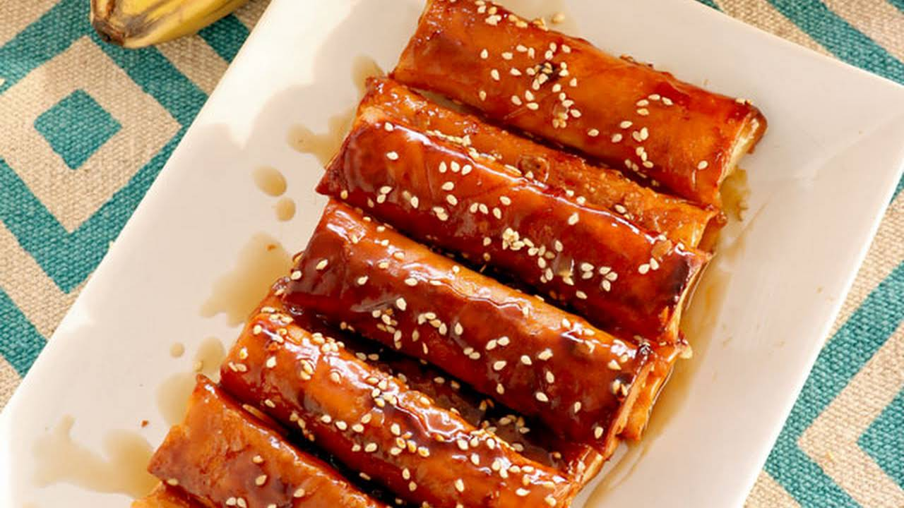

Fried Banana Wrap

This dish is a beloved Filipino snack, traditionally made with saba bananas and jackfruit, which are not easy to get a hold of for everyone so this recipe will simplify it so everyone can have a taste of this delicious dessert from the south east pacific.
Crunchy and gooey on the inside, this dish should leave you wanting more! So here's a list of what you need to grab from the grocery!
Ingredients
- Bananas (saba bananas if you can get them but normal bananas will do)
- Rhum!
- Cooking Oil
- Rice Wrapping Paper
- White Sesame Seeds
- Sweet Milk Powder or Condensed Milk
Steps
- Cut the bananas into two equal halves, now cut these lengthwise so you're left with a long quarter bananas.
- Wrap the bananas in the rice paper.
- Heat up the rhum in a pan on low heat.
- Once the rhum starts to become less fluid, take it out of the heat and put it in a container.
- Heat up some oil in the pan and fry the wrapped bananas until golden brown.
- Once golden brown, add in the rhum and coat the bananas with it completely.
- When done, put the bananas aside and toast the sesame seeds a little.
- Serve on a plate, drizzle with condensed milk or sprinkle with milk powder, top with the sesame seeds.
- Send them to my home address, please and thank you.